راهنمای کاربر
کاربر خود شخصیت یا دفتر اوست و داشبورد شخصیتهای در دسترس را میبیند، فیلتر میکند و گزارش میگیرد. کاربر چیزی را ویرایش نمیکند.
چه کارهایی میتوانید بکنید
- ورود با رمز عبور یا کد پیامکی و بازیابی رمز
- دیدن داشبورد، رسانه، پستها، تحلیل و پیشنهادهای شخصیتهای در دسترس
- محدود کردن همه بخشها به سکوها و بازه زمانی دلخواه
- دریافت گزارش PDF روزانه، هفتگی، ماهانه یا بازه دلخواه
- تغییر رمز عبور خود
۱. ورود به سامانه
سه راه برای ورود دارید: نام کاربری و رمز، کد پیامکی، یا بازیابی رمز عبور اگر آن را فراموش کردهاید.
ورود با نام کاربری و رمز
در برگه «نام کاربری و رمز»، «نام کاربری» و «رمز عبور» خود را وارد کنید و «ورود به سامانه» را بزنید. با «نام کاربری را به خاطر بسپار» نام کاربری دفعه بعد از پیش پر میشود و با «مرا به خاطر بسپار (۳۰ روز)» تا ۳۰ روز روی همین دستگاه وارد میمانید.
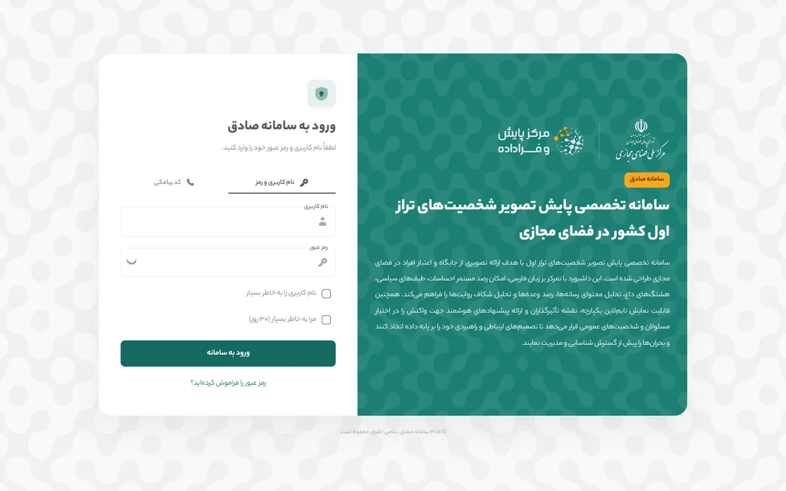
تصویر: صفحه ورود: برگه «نام کاربری و رمز» ورود با کد پیامکی
برگه «کد پیامکی» را انتخاب کنید، «شماره موبایل» ثبتشده در حساب خود را بنویسید و «دریافت کد ورود» را بزنید. کد پیامکشده را در «کد تأیید» وارد کنید و «ورود به سامانه» را بزنید. کد مدت کوتاهی اعتبار دارد؛ اگر منقضی شد، «ارسال دوباره کد» را بزنید.
نکته: ورود پیامکی فقط برای حسابی کار میکند که مدیر برایش شماره موبایل ثبت کرده باشد.
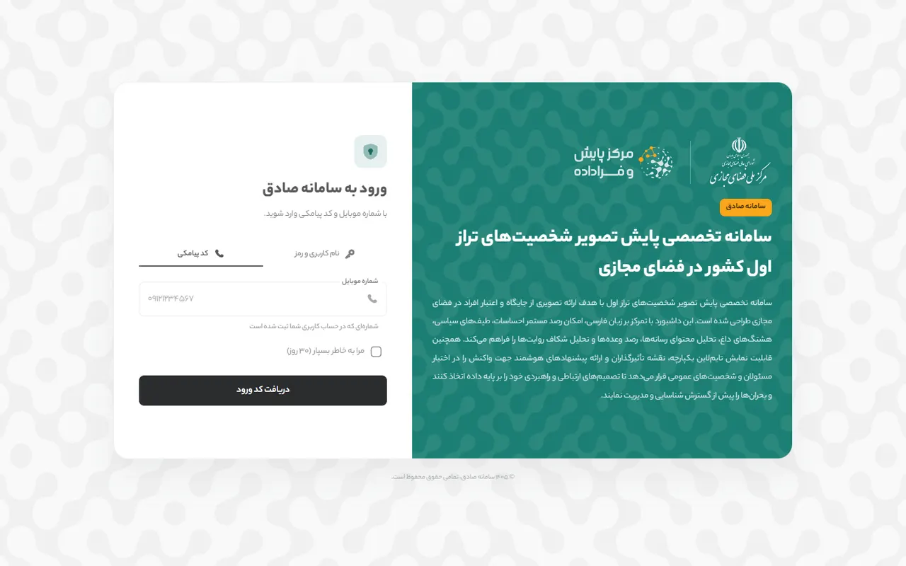
تصویر: برگه «کد پیامکی» فراموشی رمز عبور
زیر فرم ورود «رمز عبور را فراموش کردهاید؟» را بزنید. شماره موبایل حساب را وارد کنید و «ارسال کد بازیابی» را بزنید، کد را با «تأیید کد» تأیید کنید، سپس «رمز عبور جدید» و «تکرار رمز عبور جدید» (حداقل ۶ کاراکتر) را بنویسید و «ذخیره رمز عبور جدید» را بزنید.
نکته: پس از تغییر رمز، ورودهای «مرا به خاطر بسپار» روی دستگاههای دیگر هم بسته میشوند.
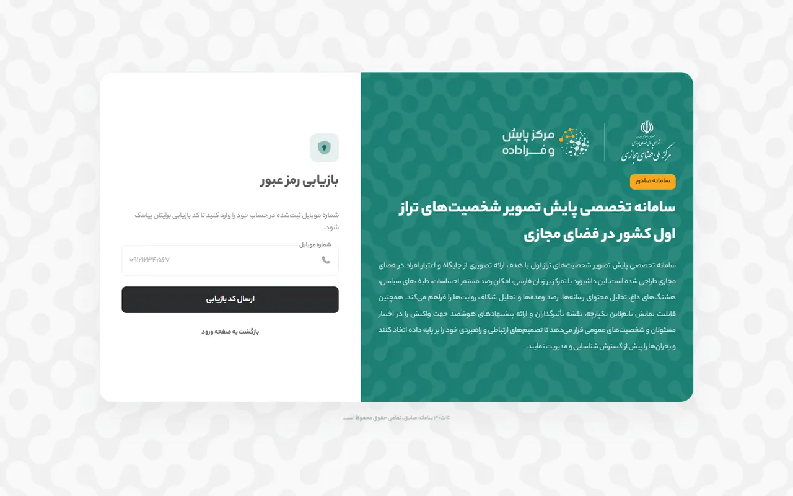
تصویر: بازیابی رمز عبور با کد پیامکی
۲. آشنایی با صفحه و انتخاب شخصیت
نوار بالای صفحه نام سامانه، زمان آخرین بهروزرسانی دادهها و شخصیتی را که میبینید نشان میدهد؛ منوی کنار صفحه بخشهای سامانه را باز میکند.
نوار بالای صفحه
در وسط نوار بالا «سامانه صادق» و «آخرین بهروزرسانی» دادهها با تاریخ و ساعت دقیق دیده میشود. در کنار آن زنگ «اعلانها» (خبر پایان جمعآوری یا تغییر سطح بحران)، دکمه «حالت تاریک» / «حالت روشن» و کارت شخصیت در حال مشاهده قرار دارند.
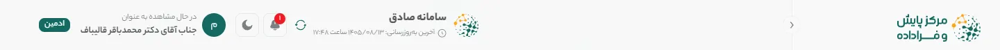
تصویر: نوار بالای صفحه انتخاب شخصیت
روی کارت شخصیت («پروفایل» یا «در حال مشاهده به عنوان») بزنید تا فهرست شخصیتهایی که به آنها دسترسی دارید باز شود. شخصیتها به ترتیب اهمیت سمت مرتب شدهاند و وقتی تعدادشان زیاد باشد با «جستجوی پروفایل…» پیدا میشوند. همه بخشهای داشبورد برای شخصیت انتخابشده نمایش داده میشوند.
نکته: اگر فقط به یک شخصیت دسترسی داشته باشید، این کارت فقط نام او را نشان میدهد.
منوی بخشها
از منوی کنار صفحه بخشها را باز کنید: «داشبورد»، «رسانه»، «پستها»، «تحلیل»، «پیشنهادها»، «گزارشها»، «پروفایل» و «راهنما». در تلفن همراه همین بخشها در نوار پایین صفحه هستند.
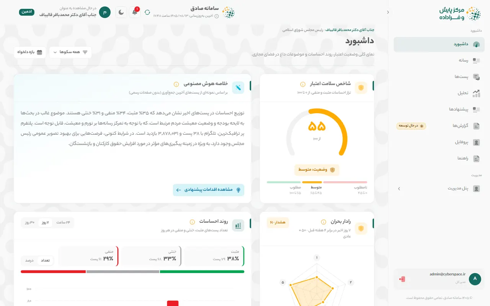
تصویر: صفحه «داشبورد» با منوی کنار صفحه
۳. فیلتر سکوها و بازه زمانی
دو دکمه زیر عنوان صفحه، داده همه بخشها را به سکوها و بازه دلخواه شما محدود میکنند.
انتخاب سکوها
دکمه «همه سکوها» را بزنید و سکوهای دلخواه (مثلاً ایکس، بله و ایتا) را علامت بزنید. از این پس فقط داده همین سکوها در «داشبورد»، «رسانه»، «پستها»، «تحلیل» و «پیشنهادها» نمایش داده میشود. انتخاب شما برای دفعات بعد هم ذخیره میشود.
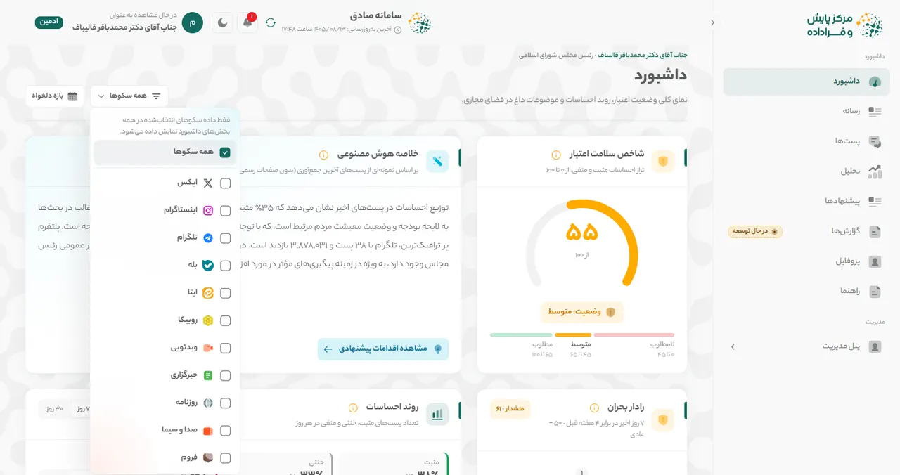
تصویر: منوی انتخاب سکوها انتخاب بازه زمانی دلخواه
دکمه «بازه دلخواه» تقویم شمسی را باز میکند. یکی از «بازههای آماده» (۷، ۱۴، ۳۰ یا ۹۰ روز اخیر، «ماه جاری»، «ماه گذشته») را بزنید یا روز شروع و روز پایان را روی تقویم انتخاب کنید و «اعمال» را بزنید. بازه حداکثر ۹۰ روز است.
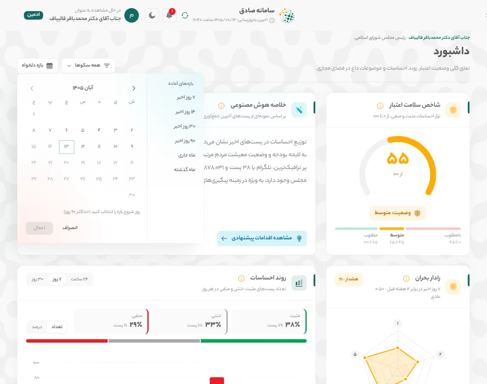
تصویر: تقویم شمسی «بازه دلخواه» برداشتن فیلترها
وقتی فیلتری فعال است، دکمه «حذف همه فیلترها» کنار آن ظاهر میشود. در تقویم هم «حذف بازه» فقط بازه را برمیدارد.
نکته: خلاصه هوش مصنوعی، پیشنهادها و وضعیت کلان کشور همیشه بر اساس همه سکوها و آخرین جمعآوری ساخته میشوند؛ یادداشت کوچکی زیر این کارتها این را یادآوری میکند.
۴. خواندن داشبورد و کارتها
هر کارت یک پرسش را پاسخ میدهد. با نماد (i) کنار عنوان هر کارت توضیح کامل آن را ببینید.
توضیح هر کارت
نشانگر را روی نماد (i) کنار عنوان کارت ببرید (در تلفن همراه روی آن بزنید). توضیح در چهار بخش میآید: «چه چیزی را نشان میدهد»، «نحوه محاسبه»، «منبع داده» و «بازه زمانی».
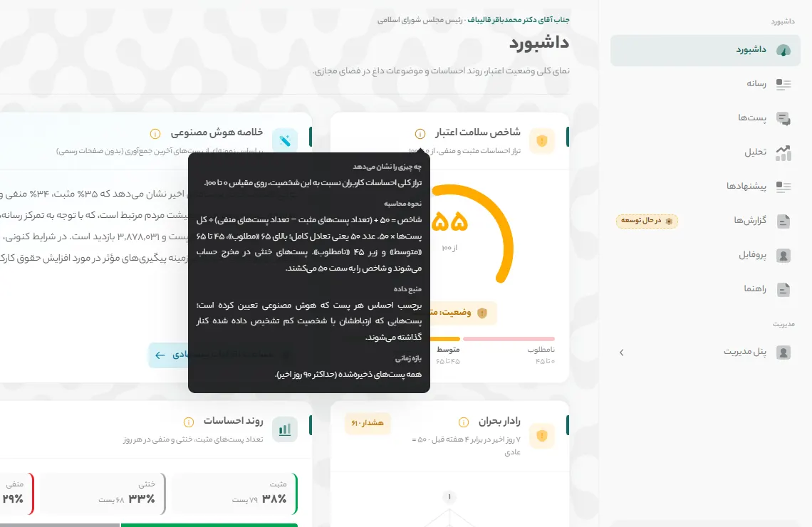
تصویر: توضیح کارت «شاخص سلامت اعتبار» بازه هر کارت
بسیاری از کارتها دکمههای «۲۴ ساعت»، «۷ روز» و «۳۰ روز» دارند. «روند احساسات» علاوه بر آن بین «تعداد» و «درصد» جابهجا میشود. اگر بالای صفحه بازه دلخواه انتخاب کرده باشید، همین دکمهها تعداد روزهای انتخابی را نشان میدهند.
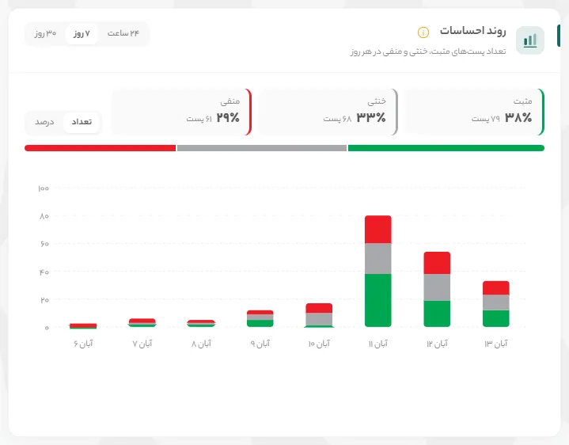
تصویر: کارت «روند احساسات» طیف سیاسی
کارت «طیف سیاسی» نشان میدهد پستهای هر جناح درباره این شخصیت چه سهمی مثبت، خنثی یا منفی است. سه کاشی بالای کارت جمع همه جناحهاست.
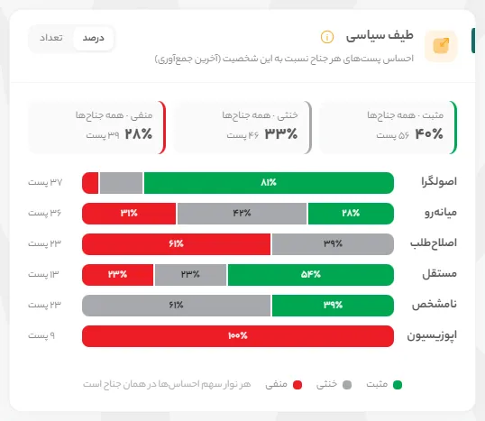
تصویر: کارت «طیف سیاسی» هشتگها و ابر هشتگ
کارت «هشتگها و موضوعات داغ» پنج موضوع برتر را نشان میدهد؛ «بیشتر» بقیه را باز میکند. با دکمه ابر (بالای فهرست) نمای «ابر هشتگ» را ببینید.
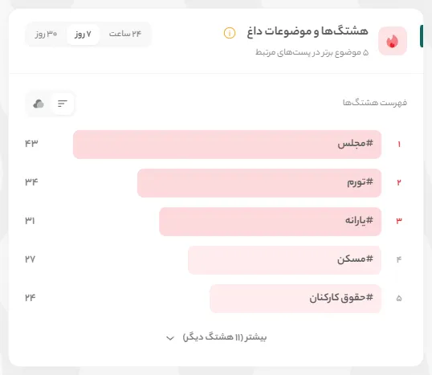
تصویر: کارت «هشتگها و موضوعات داغ» رادار بحران
کارت «رادار بحران» پنج نشانه بحران را با حالت عادی چهار هفته قبل مقایسه میکند. برچسب بالای کارت سطح فعلی است: عادی، «هشدار» (از ۵۵) یا «بحرانی» (از ۷۰).
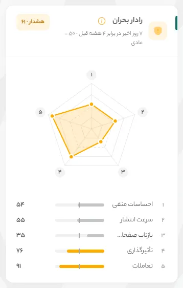
تصویر: کارت «رادار بحران» صفحه «تحلیل»
در «تحلیل» کارتهای «وضعیت کلان کشور» (در چهار حوزه فرهنگی و اجتماعی، سیاسی و دیپلماتیک، امنیتی و نظامی، اقتصادی و معیشتی)، «ابر واژگان»، «حسابهای ربات و انسانی» با دلایل مشکوکبودن، «چشمانداز عمومی» و «تحلیل شکاف روایت» را میبینید.
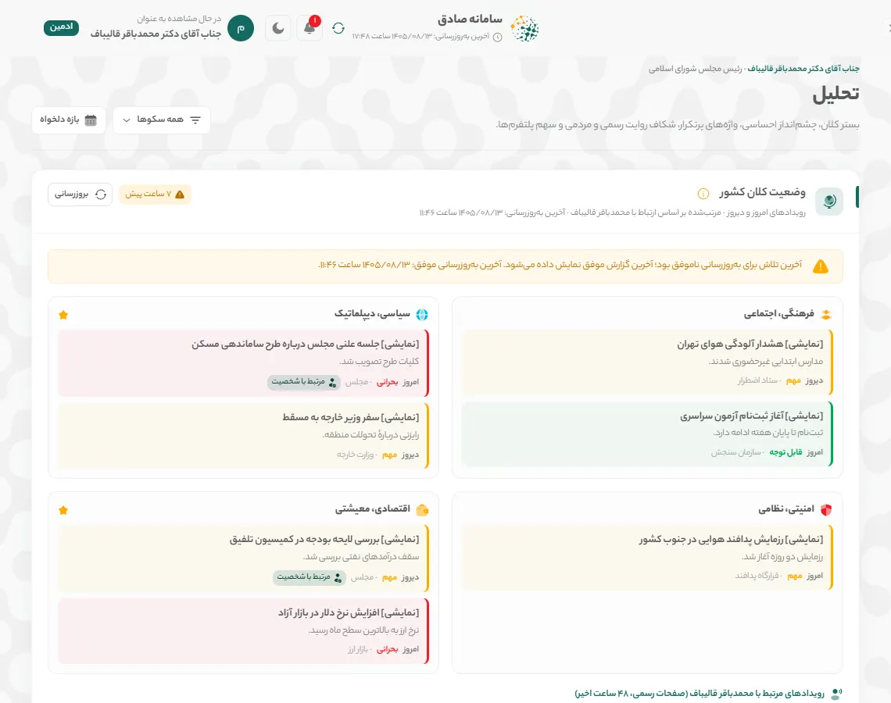
تصویر: صفحه «تحلیل» وضعیت کلان کشور
رویدادهای مرتبط با سمت شخصیت با برچسب «مرتبط با شخصیت» مشخص و اول نمایش داده میشوند. اگر بهروزرسانی ناموفق باشد، آخرین گزارش موفق با هشدار «بهروز نیست» نمایش داده میشود.
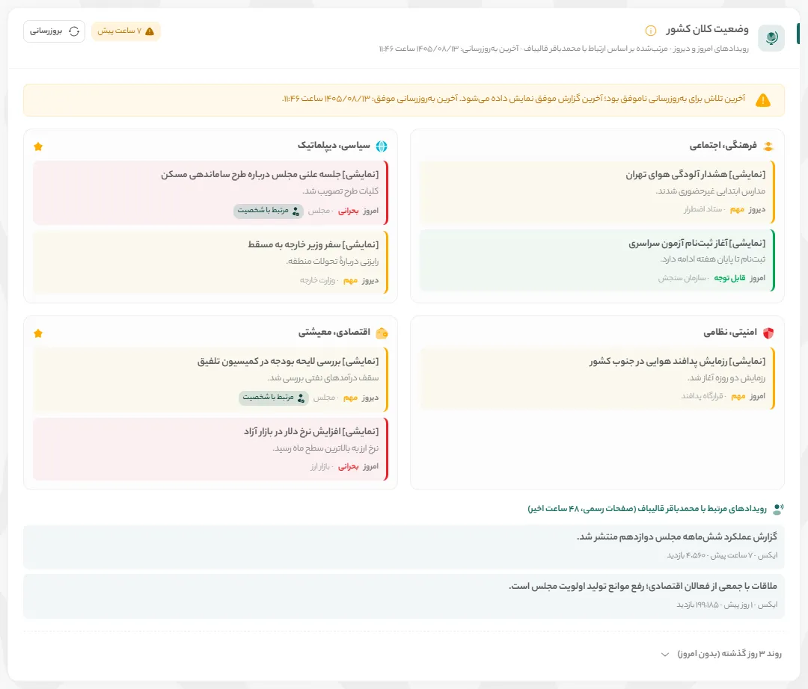
تصویر: کارت «وضعیت کلان کشور» حسابهای ربات و انسانی
این کارت سهم حسابهای «انسانی»، «مشکوک» و «احتمالاً ربات» را نشان میدهد و برای هر حساب مشکوک امتیاز، سطح اطمینان و دلایل را میآورد. این یک برآورد آماری است، نه تشخیص قطعی.
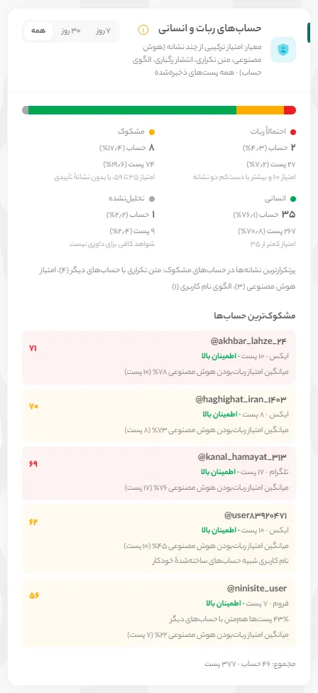
تصویر: کارت «حسابهای ربات و انسانی» صفحه «رسانه» و رصد وعدهها
در «رسانه»، «صفحات رسمی» شخصیت، «رصد وعدهها»، «تحلیل محتوای منتشرشده» و «تایملاین یکپارچه» قرار دارند. در «رصد وعدهها» وعدههای سمت فعلی اول میآیند و وعدههای سمتهای پیشین جداگانه گروهبندی شدهاند.
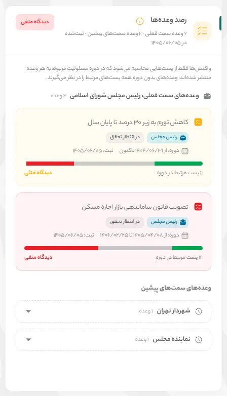
تصویر: کارت «رصد وعدهها» صفحه «پستها»
«خلاصه پلتفرمها» تعداد پست هر سکو را نشان میدهد؛ با زدن هر سکو فهرستهای پایین صفحه به آن محدود میشوند. «نقشه تأثیرگذاران»، «پربازدیدترین پستها»، «پربحثترین پستها» و «پرتکرارترین پستها» هم در همین صفحهاند.
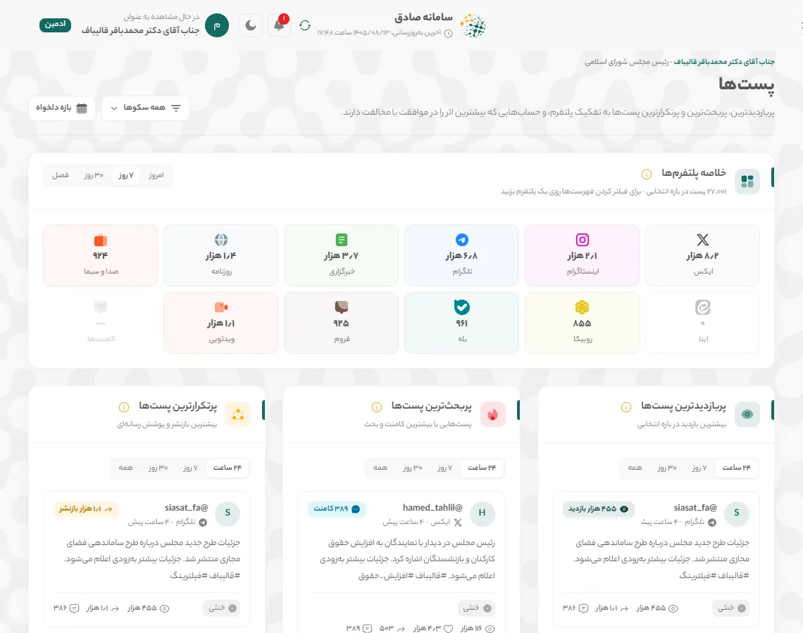
تصویر: صفحه «پستها» صفحه «پیشنهادها»
«پیشنهادهای امروز» اقدامهای پیشنهادی برای واکنش رسانهای را با اولویت نشان میدهد. در «شبیهساز سناریو» یک اتفاق فرضی بنویسید تا واکنش احتمالی فضای مجازی پیشبینی شود؛ این پیشبینی است، نه داده واقعی.
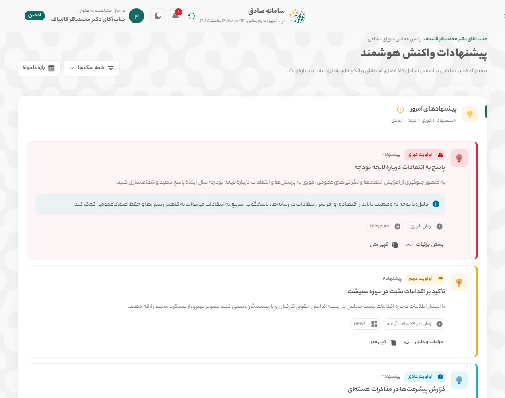
تصویر: صفحه «پیشنهادات واکنش هوشمند»
۵. دریافت گزارش
در «گزارشها» برای شخصیت انتخابشده گزارش PDF صفحهبندیشده در قطع A4 بسازید.
نوع و بازه گزارش
در گام ۱، «نوع و بازهٔ گزارش»، یکی از «روزانه»، «هفتگی»، «ماهانه» یا «بازه دلخواه» را انتخاب کنید. برای بازه دلخواه «انتخاب بازه» را بزنید و تا ۹۰ روز را در تقویم شمسی مشخص کنید.
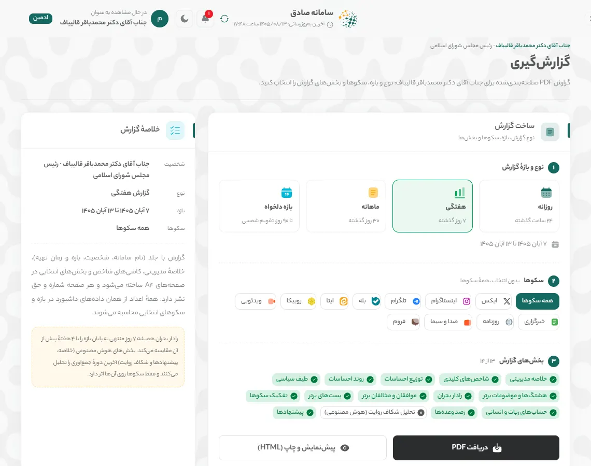
تصویر: صفحه «گزارشگیری» سکوها و بخشها
در گام ۲، «سکوها»، سکوهای دلخواه را انتخاب کنید؛ بدون انتخاب، «همه سکوها» در گزارش میآیند. در گام ۳، «بخشهای گزارش»، بخشهایی مانند «خلاصه مدیریتی»، «روند احساسات»، «رادار بحران» یا «رصد وعدهها» را روشن یا خاموش کنید.
دریافت PDF یا چاپ
«دریافت PDF» فایل گزارش را دانلود میکند. «پیشنمایش و چاپ (HTML)» گزارش را در پنجرهای تازه باز میکند تا آن را ببینید یا چاپ کنید. کارت «خلاصهٔ گزارش» پیش از ساخت، شخصیت، نوع، بازه و سکوها را نشان میدهد.
نکته: اگر پیشنمایش باز نشد، به مرورگر اجازه باز کردن پنجره جدید را بدهید.
۶. حساب کاربری و خروج
رمز عبور خود را از صفحه «پروفایل» تغییر دهید و از پایین منوی کنار صفحه خارج شوید.
صفحه پروفایل
در «پروفایل» مشخصات شخصیت تحت رصد، کلیدواژهها، «کانالها و صفحات رسمی» و «اطلاعات سیستمی» را میبینید.
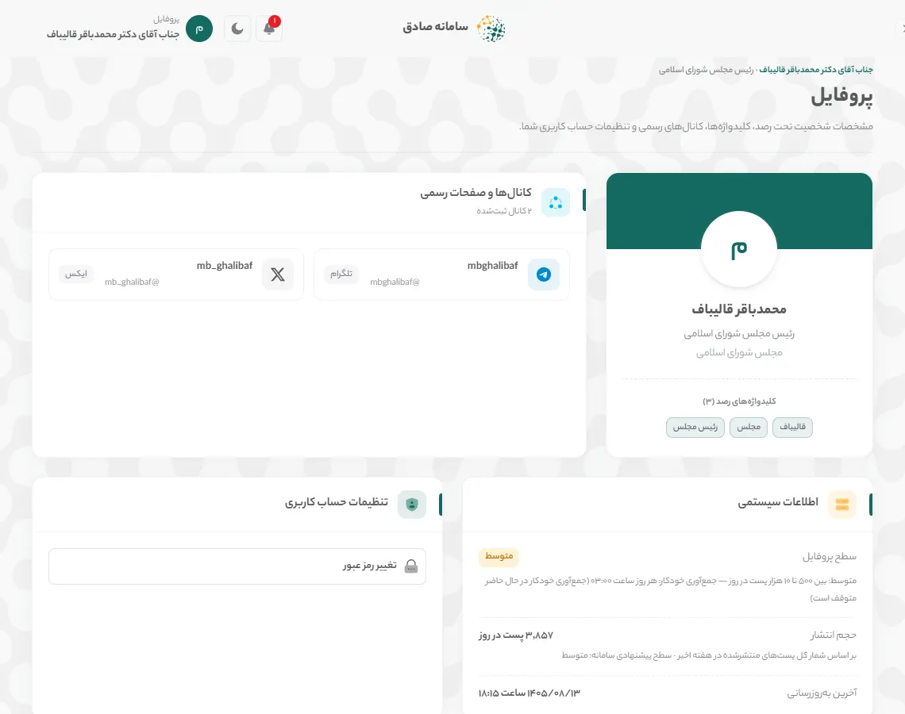
تصویر: صفحه «پروفایل» تغییر رمز عبور
در کارت «تنظیمات حساب کاربری»، «تغییر رمز عبور» را بزنید، «رمز عبور فعلی»، «رمز عبور جدید» و «تکرار رمز جدید» را بنویسید و «ذخیره» را بزنید. رمز جدید باید حداقل ۶ کاراکتر و با رمز فعلی متفاوت باشد.
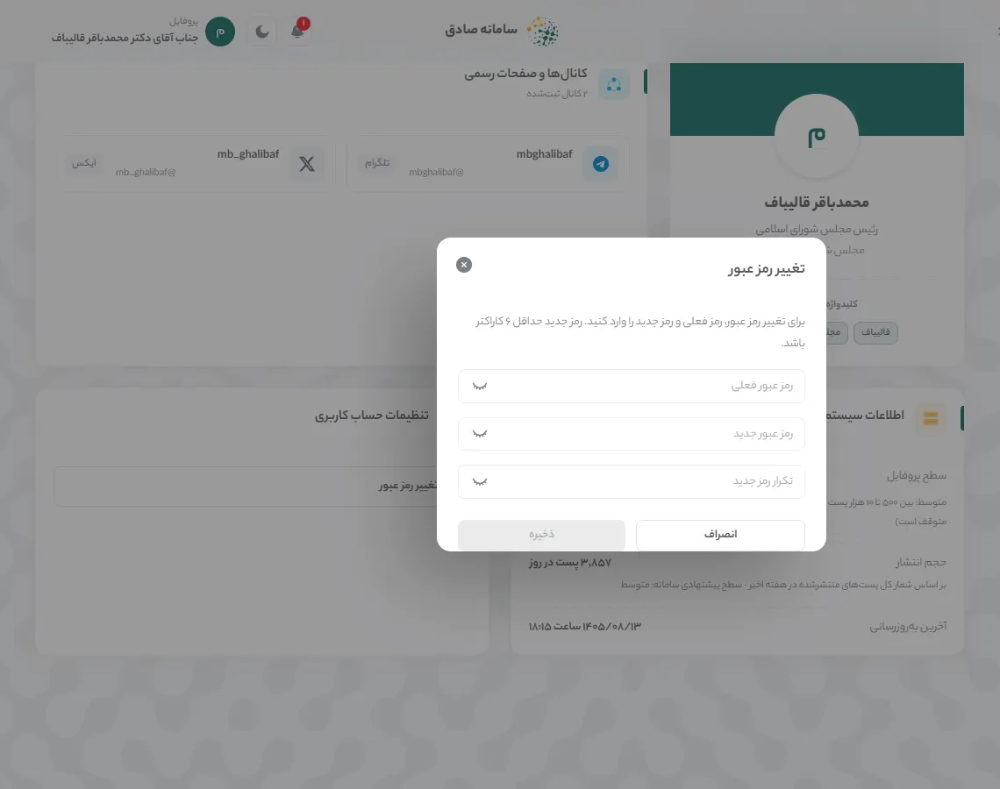
تصویر: پنجره «تغییر رمز عبور» خروج
در پایین منوی کنار صفحه، کنار نام خود، دکمه «خروج از حساب» را بزنید. روی دستگاههای مشترک همیشه خارج شوید و «مرا به خاطر بسپار» را روشن نکنید.
واژهنامه کارتها
هر کارت داشبورد در یک جمله. توضیح کامل، نحوه محاسبه و منبع داده هر کارت در نماد (i) کنار عنوان آن است.
صفحه «داشبورد»
- شاخص سلامت اعتبار
- تراز کلی احساسات کاربران نسبت به این شخصیت، روی مقیاس ۰ تا ۱۰۰.
- خلاصه هوش مصنوعی
- خلاصه متنی وضعیت فضای مجازی درباره این شخصیت در سه بند کوتاه: وضعیت کلی احساسات، موضوعات و پلتفرمهای غالب، و مهمترین هشدار یا فرصت.
- رادار بحران
- پنج نشانه زودهنگام بحران رسانهای: احساسات منفی، سرعت انتشار، بازتاب صفحات رسمی، تأثیرگذاری و تعاملات.
- روند احساسات
- تعداد پستهای مثبت، خنثی و منفی در هر روز؛ در نمای ۲۴ ساعت، در هر ساعت.
- طیف سیاسی
- پستهای هر جناح سیاسی درباره این شخصیت و اینکه چه سهمی از آنها مثبت، خنثی یا منفی است.
- هشتگها و موضوعات داغ
- موضوعات و هشتگهایی که بیشترین تکرار را در پستهای مرتبط داشتهاند.
- پربازدیدترین محتواها
- پستهایی درباره این شخصیت که بیشترین بازدید را داشتهاند.
- منابع داده
- تعداد پستهای مرتبط با این شخصیت در هر پلتفرم.
صفحه «تحلیل»
- وضعیت کلان کشور
- مهمترین رویدادهای امروز و دیروز کشور در چهار حوزه: فرهنگی و اجتماعی، سیاسی و دیپلماتیک، امنیتی و نظامی، اقتصادی و معیشتی؛ بههمراه رویدادهای مرتبط با خود شخصیت.
- چشمانداز عمومی
- چشمانداز عمومی: سهم هر حالت احساسی (امید، نگرانی، اطمینان و …) در پستهای مرتبط.
- ابر واژگان
- کلیدواژههای پرتکرار در گفتگوها درباره این شخصیت؛ هرچه واژه بزرگتر، پرتکرارتر.
- حسابهای ربات و انسانی
- چه سهمی از حسابهایی که درباره این شخصیت نوشتهاند احتمالاً ربات یا مشکوکاند، و مشکوکترین حسابها کداماند.
- تحلیل شکاف روایت
- چه سهمی از بحث مردم به روایتهایی میپردازد که شخصیت در صفحات رسمیاش مطرح میکند، و مردم خارج از این روایتها درباره چه موضوعاتی مینویسند.
صفحه «رسانه»
- صفحات رسمی
- کانالها و صفحات رسمی این شخصیت که در سامانه پایش میشوند.
- رصد وعدهها
- وعدههای ثبتشده این شخصیت، سمت و دوره مسئولیتی که وعده در آن داده شده، و واکنش مردم به هر کدام.
- تحلیل محتوای منتشرشده
- حجم، بازدید، لایک و بازنشر محتوای منتشرشده در صفحات رسمی، هفته به هفته.
- تایملاین یکپارچه
- آخرین پستهای منتشرشده در صفحات رسمی، به ترتیب زمان.
صفحه «پستها»
- خلاصه پلتفرمها
- تعداد کل پستهایی که در هر پلتفرم درباره این شخصیت منتشر شده است.
- نقشه تأثیرگذاران
- حسابهایی که بیشترین بازدید را در گفتگو درباره این شخصیت داشتهاند و موضعشان.
- پربازدیدترین پستها
- پستهایی با بیشترین تعداد بازدید.
- پربحثترین پستها
- پستهایی که بیشترین بحث و نظر را برانگیختهاند.
- پرتکرارترین پستها
- پستهایی که بیشتر از بقیه بازنشر یا فوروارد شدهاند.
صفحه «پیشنهادها»
- پیشنهادهای امروز
- پیشنهادهای عملیاتی برای واکنش رسانهای.
- شبیهساز سناریو
- شبیهساز سناریو: یک اتفاق فرضی بنویسید تا واکنش احتمالی فضای مجازی پیشبینی شود.
پرسشهای پرتکرار
چرا عددهای یک کارت با کارت دیگر کمی فرق دارد؟
هر کارت بازه و مجموعه پست خودش را دارد؛ مثلاً «منابع داده» همه پستهای منطبق با کلیدواژهها را میشمارد ولی «روند احساسات» فقط پستهای ذخیرهشده و تحلیلشده را. توضیح (i) هر کارت بازه و منبع آن را میگوید.
دادهها هر چند وقت بهروز میشوند؟
بسته به حجم پستهای هر شخصیت، از چند بار در روز تا هر چند روز یک بار. زمان دقیق آخرین بهروزرسانی در وسط نوار بالای صفحه آمده است.
فیلتر سکوها روی خلاصه هوش مصنوعی اثر ندارد؟
خیر. «خلاصه هوش مصنوعی»، «پیشنهادهای امروز» و «وضعیت کلان کشور» همیشه از همه سکوها و آخرین جمعآوری ساخته میشوند و یادداشت زیر کارت این را میگوید. «تحلیل شکاف روایت» برای سکوها و بازه انتخابی دوباره شمرده میشود.
کد پیامکی به دستم نمیرسد.
مطمئن شوید شماره را درست و با همان شمارهای که در حساب شما ثبت شده وارد کردهاید. اگر شمارهای ثبت نشده، از مدیر بخواهید آن را در «کاربران و نقشها» اضافه کند. پس از پایان شمارش معکوس، «ارسال دوباره کد» را بزنید.
شخصیت مورد نظرم را در فهرست نمیبینم.
فقط شخصیتهایی نمایش داده میشوند که مدیر در «دسترسی به شخصیتها» به شما داده است. از مدیر سامانه بخواهید دسترسی را اضافه کند.
چطور حالت تاریک را روشن کنم؟
دکمه ماه («حالت تاریک») در نوار بالای صفحه را بزنید. با دوباره زدن آن («حالت روشن») به حالت روشن برمیگردید.